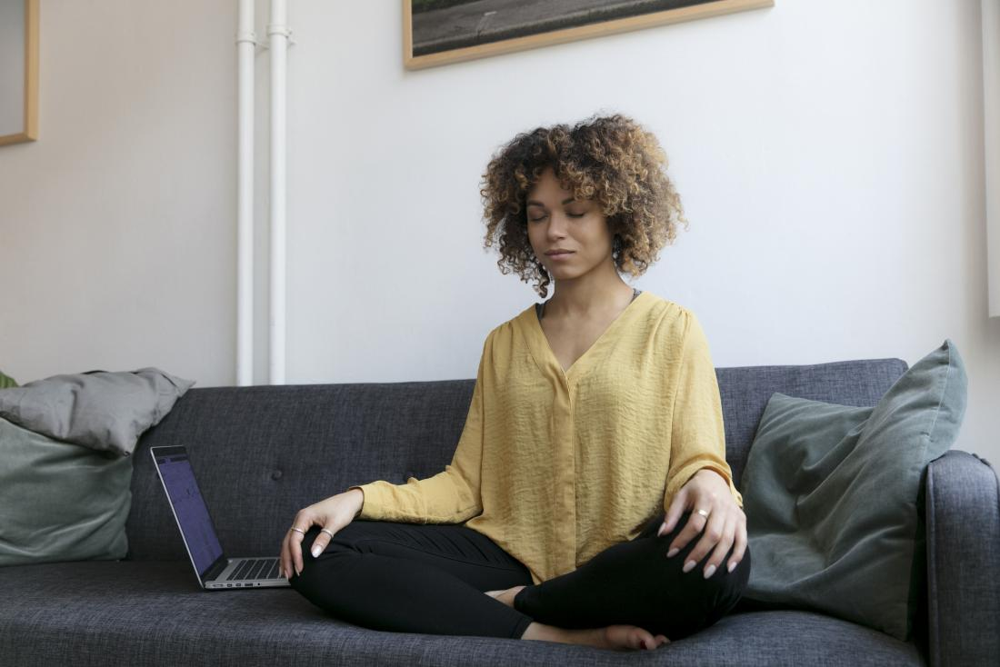
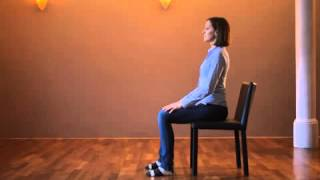

What is Mindfullness Meditation?
Mindfulness meditation is a mental training practice that teaches you to slow down racing thoughts, let go of negativity, and calm both your mind and body. It combines meditation with the practice of mindfulness, which can be defined as a mental state that involves being fully focused on "the now" so you can acknowledge and accept your thoughts, feelings, and sensations without judgment.
"...to meditate with mindful breathing is to bring back your body and mind to the present moment."
...The Science behind Mindfulness Meditation!
How to practice Mindfulness Meditation?
Techniques can vary, but in general, mindfulness meditation involves deep breathing and awareness of body and mind. Practicing mindfulness meditation doesn't require props or preparation (no need for candles, essential oils, or mantras, unless you enjoy them). To get started, all you need is a comfortable place to sit, three to five minutes of free time, and a judgment-free mindset.
Find a good spot in your home, ideally where there isn’t too much clutter and you can find some quiet. Leave the lights on or sit in natural light. You can even sit outside if you like, but choose a place with little distraction.
Positions:
Seated in a chair, or on a sofa
 Unless you’ve done a lot of yoga, or you’ve grown up practicing meditation in a cross-legged seated or lotus position and you’re really comfortable with it, we recommend sitting in an upright chair with your legs uncrossed, feet on the floor, and your arms and hands resting either on the legs or in the lap.
Laying down (savasana position)
Mind tends to be more alert and attentive when we’re seated and upright, most teachers agree that sitting to meditate is best whenever possible. However, if you’re wondering whether you can meditate lying down, the answer is yes.
The best way to meditate lying down is to lay a yoga mat or a towel on the floor and assume a so-called corpse position or a savasana.
Techniques
There is more than one way to practice mindfulness, but the goal of any mindfulness technique is to achieve a state of alert, focused relaxation by deliberately paying attention to thoughts and sensations without judgment. This allows the mind to refocus on the present moment.
All mindfulness techniques are a form of meditation.
-
Basic mindfulness meditation – Sit quietly and focus on your natural breathing or on a word or “mantra” that you repeat silently. Allow thoughts to come and go without judgment and return to your focus on breath or mantra.
- 3min exercise
Mindful Breathing Meditation
- 5min exercise
Mindful Breathing Meditation
- 9min exercise
Breathing Meditation for Beginners -
Body sensations – Notice subtle body sensations such as an itch or tingling without judgment and let them pass. Notice each part of your body in succession from head to toe.
- 11min exercise
Body Sensation Meditation
- 20min exercise
Mindfulness of Body Sensations Meditation -
Sensory – Notice sights, sounds, smells, tastes, and touches. Name them “sight,” “sound,” “smell,” “taste,” or “touch” without judgment and let them go.
-
Emotions – Allow emotions to be present without judgment. Practice a steady and relaxed naming of emotions: “joy,” “anger,” “frustration.” Accept the presence of the emotions without judgment and let them go.
- 12min exercise
Naming Your Emotions Meditation -
Urge surfing – Cope with cravings (for addictive substances or behaviors) and allow them to pass. Notice how your body feels as the craving enters. Replace the wish for the craving to go away with the certain knowledge that it will subside.
Benefits of mindfulness
- Enhance your sleep Since improves relaxation and increase production of serotonin and melatonin.
- Lower your stress levels. and reduced levels of emotional exhaustion (burnout), psychological distress, depression, anxiety, and occupational stress.
- Ease negative emotional states
- Increase your attentionIf you find it difficult to pay attention for long periods of time, meditation might enhance your focus.
- Mindfulness meditationis good for our hearts. In one study, people with pre-hypertension were randomly assigned to augment their drug treatment with either a course in mindfulness meditation or a program that taught progressive muscle relaxation. Those who learned mindfulness had significantly greater reductions in their systolic and diastolic blood pressure than those who learned progressive muscle relaxation, suggesting that mindfulness could help people at risk for heart disease by bringing blood pressure down.
- Mindfulness meditation may decrease cognitive decline from aging or Alzheimer’s.
- Mindfulness meditation may reduce cell aging.
Mindfulness meditation helps train your mind to focus on the present, making you less likely to ruminate on anxious thoughts that can fuel depression.